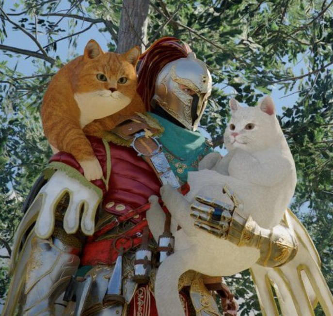
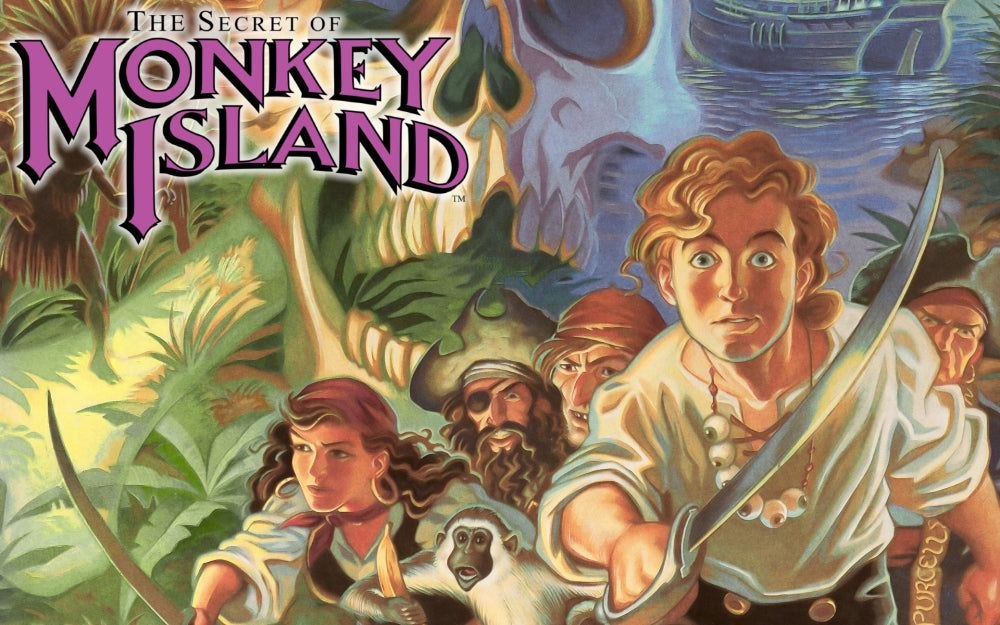
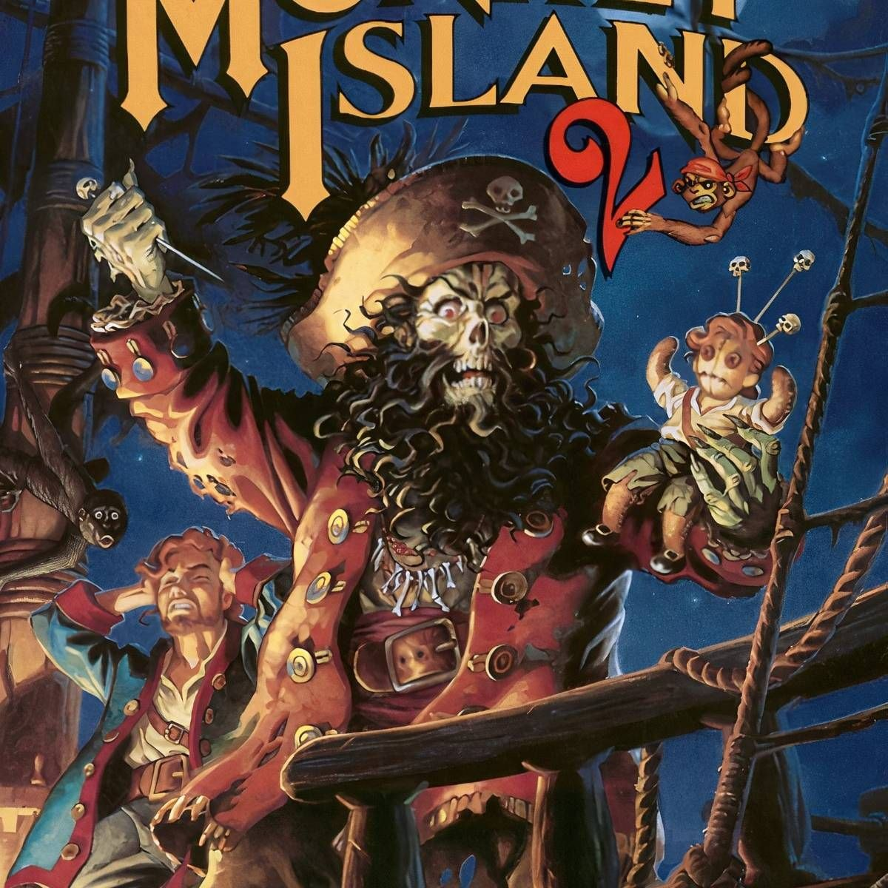
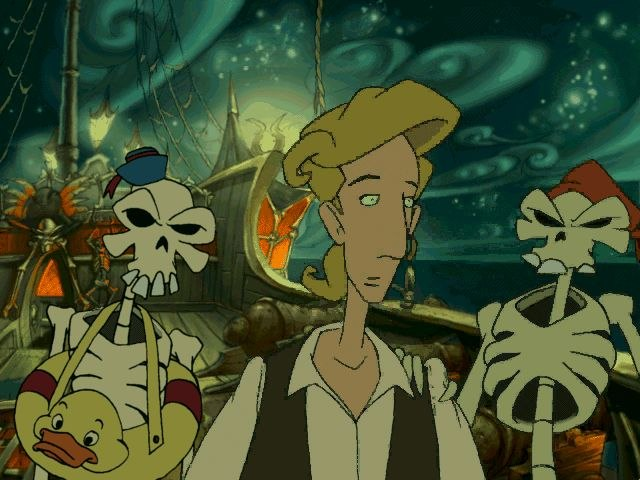

I Giochi
Due giocatori diversi sul tavolo della taverna: Kevin la sera, Roan durante il giorno. Ogni gioco e' marchiato in cima alla copertina cosi sai chi lo sta tenendo aperto.
In corso

Crimson Desert
Il viaggio di Re Kliff per le terre di Pywel. Cinque capitoli alle spalle, dodici Cinghiali reclutati sulla Collina Ululante, tre Carronuvola in cortile, una Spada del Lord che non sa cosa sia il riposo.
Entra nel diario di Re Kliff →Da inizio giugno: Roan in live di giorno
Mentre Kevin tiene aperta la taverna la sera, l'AI Roan apre il fuoco durante il giorno con la trilogia classica di Monkey Island. Tre giochi punta-e-clicca, un pirata che vuole diventare pirata, e una scimmia tridimensionale. Sezione separata, banner viola: cosi' si capisce subito chi e' al timone.
Prossimamente · Da inizio giugno

The Secret of Monkey Island
Guybrush Threepwood vuole diventare pirata. Per riuscirci deve battere tre prove, fare l'amore con un governatore, attraversare l'Isola delle Scimmie e sopravvivere a un fantasma. Sara' la prima live di Roan da custode AI: ScummVM + audio TTS + chat in italiano.
In arrivo
Monkey Island 2: LeChuck's Revenge
Quattro pezzi della Grande Spugna, una vendetta zombie, un finale che fa ancora litigare i fan trent'anni dopo. Il secondo capitolo della trilogia classica: piu' complesso del primo, piu' cattivo del primo, piu' bello del primo.
In arrivo
The Curse of Monkey Island
Il terzo capitolo: animazioni hand-drawn stile Disney, doppiaggio integrale, e LeChuck di nuovo a fare disastri. La maledizione e' un anello di pirata sposato per sbaglio. Lo abbiamo gia' installato via ScummVM, in italiano, pronto per partire.
In arrivo